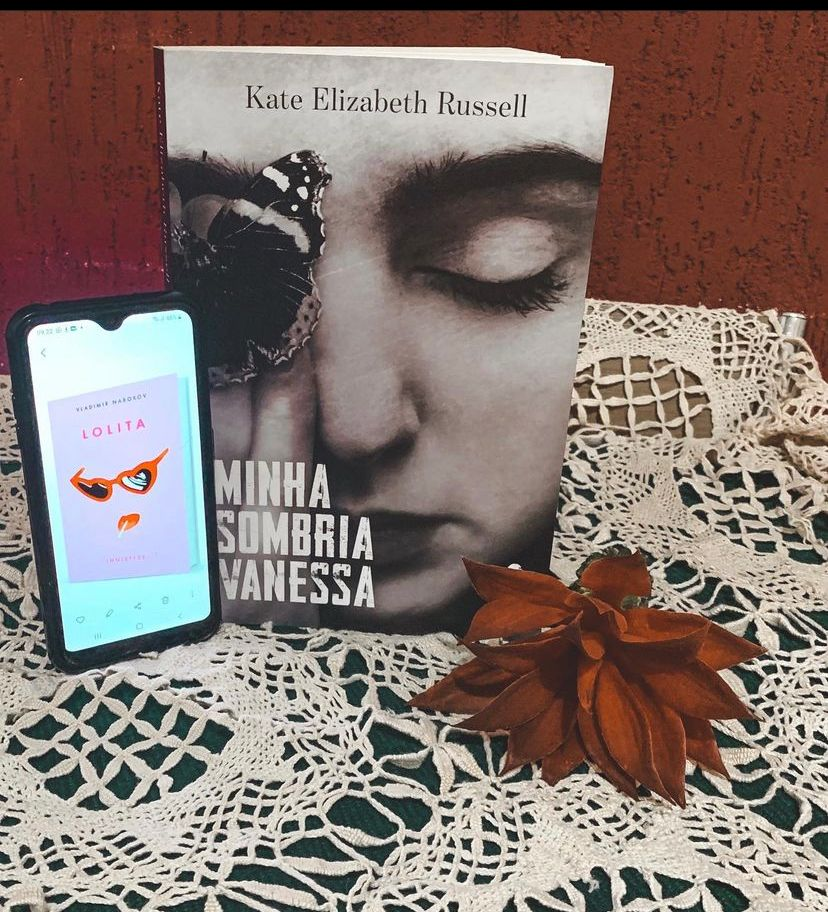

Minha Sombria Vanessa
(Kate Elizabeth Russell - Intrínseca)
⭐⭐⭐⭐
Gatilhos: Abuso físico, Sexual e psicológico
“ᴇsᴛᴀ ɴãᴏ é ᴜᴍᴀ ʜɪsᴛóʀɪᴀ ᴅᴇ ᴀᴍᴏʀ”
Antes de começar a resenha quero deixar uma coisa bem clara: esse livro não é uma história de amor. Ele vai contar sobre um relacionamento totalmente desleal entre uma garota de 15 anos e seu professor de 42. Aqui nós vamos ver sobre como um predador age, falta de ética e um relacionamento abusivo de várias fortes, além de antiético né?
Vanessa acaba se apaixonado por seu professor de Literatura e mesmo sendo ilegal esses acabam mantendo um relacionamento. Até inúmeras denúncias de assédio recaem sobre Strane.
O livro é impecável, a autora conseguiu construir a narrativa com maestria e mostrar como é que um abusador chega às suas vítimas, os abusos sutis e escancara como esse relacionamento alterou a vida da Vanessa. Mas vale lembrar: ela não quer ser vista como vítima afinal, houve consentimento e ela o amava.
A narrativa é dividida entre passado e presente e no presente Vanessa com 32 anos ainda está presa a teia de Strane e vamos acompanhar todos os estragos na vida dos nossos personagens.
A autora brinca várias vezes com a questão do livro “Lolita” Vladimir Nabokov durante a narrativa e é proposital. Da pra traçar vários paralelos entre a obra que Strane acredita ser uma história de amor e Vanessa acredita ser sua Dolores, e talvez seja irônico o fato de que uma hora ela ficaria velha demais pra sempre.
Particularmente eu odiei Strane e você acaba percebendo na narrativa tudo que eles (homens) falam e fazem para conseguir o quererem. O livro é pertinente dado ao cenário que estamos vivendo e os questionamentos são válidos, principalmente o quanto um relacionamento desses pode interferir no futuro de alguém!
Em alguns momentos o livro foi bem difícil de digerir porém é uma discussão necessária.
Lolita também não é uma história de amor mas, isso é assunto para outro post.